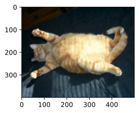
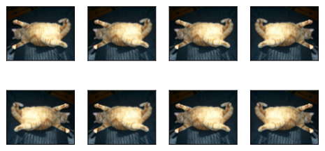
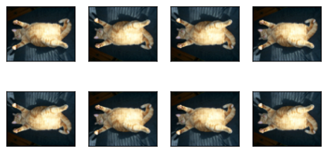
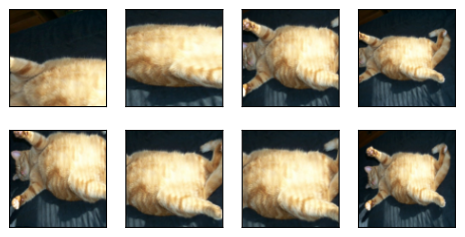
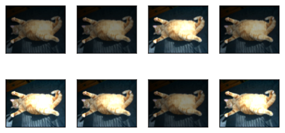
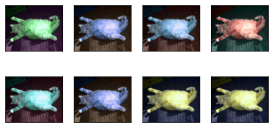
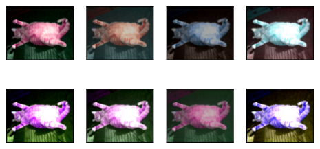
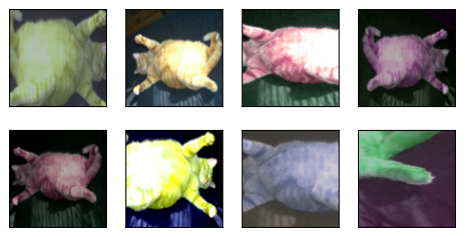
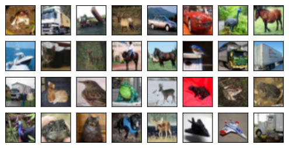
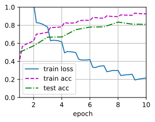

Tăng Cường Ảnh¶
Trong sec_alexnet, chúng ta đã đề cập rằng các tập dữ liệu lớn là điều kiện tiên quyết cho thành công của các mạng nơ-ron sâu trong nhiều ứng dụng. Tăng cường ảnh sinh ra các ví dụ huấn luyện tương tự nhưng khác biệt sau một chuỗi thay đổi ngẫu nhiên trên ảnh huấn luyện, qua đó mở rộng kích thước tập huấn luyện. Ngoài ra, tăng cường ảnh có thể được thúc đẩy bởi thực tế rằng các chỉnh sửa ngẫu nhiên trên ví dụ huấn luyện cho phép mô hình ít phụ thuộc hơn vào một số thuộc tính nhất định, từ đó cải thiện khả năng khái quát hóa. Ví dụ, chúng ta có thể cắt ảnh theo các cách khác nhau để đối tượng quan tâm xuất hiện ở các vị trí khác nhau, qua đó giảm sự phụ thuộc của mô hình vào vị trí của đối tượng. Chúng ta cũng có thể điều chỉnh các yếu tố như độ sáng và màu sắc để giảm độ nhạy của mô hình với màu. Có lẽ đúng là tăng cường ảnh là không thể thiếu cho thành công của AlexNet vào thời điểm đó. Trong phần này, chúng ta sẽ thảo luận kỹ thuật được dùng rộng rãi này trong thị giác máy tính.
#@tab mxnet
%matplotlib inline
from d2l import mxnet as d2l
from mxnet import autograd, gluon, image, init, np, npx
from mxnet.gluon import nn
npx.set_np()

#@tab pytorch
%matplotlib inline
from d2l import torch as d2l
import torch
import torchvision
from torch import nn

Các Phương Pháp Tăng Cường Ảnh Thường Dùng¶
Trong khảo sát các phương pháp tăng cường ảnh thường dùng, chúng ta sẽ dùng ảnh \(400\times 500\) sau làm ví dụ.


Hầu hết các phương pháp tăng cường ảnh có một mức độ ngẫu nhiên nhất định. Để giúp chúng ta quan sát hiệu ứng của tăng cường ảnh dễ hơn, tiếp theo chúng ta định nghĩa một hàm phụ trợ apply. Hàm này chạy phương pháp tăng cường ảnh aug nhiều lần trên ảnh đầu vào img và hiển thị tất cả kết quả.
#@tab all
def apply(img, aug, num_rows=2, num_cols=4, scale=1.5):
Y = [aug(img) for _ in range(num_rows * num_cols)]
d2l.show_images(Y, num_rows, num_cols, scale=scale)

Lật và Cắt¶
[Lật ảnh trái và phải] thường không làm thay đổi hạng mục của đối tượng.
Đây là một trong những phương pháp tăng cường ảnh sớm nhất và được dùng rộng rãi nhất.
Tiếp theo, chúng ta dùng module transforms để tạo thể hiện RandomHorizontalFlip, lật
ảnh trái và phải với xác suất 50%.


[Lật lên và xuống] không phổ biến bằng lật trái và phải. Nhưng ít nhất với ảnh ví dụ này, lật lên và xuống không cản trở nhận dạng.
Tiếp theo, chúng ta tạo một thể hiện RandomVerticalFlip để lật
ảnh lên và xuống với xác suất 50%.


Trong ảnh ví dụ đã dùng, con mèo nằm ở giữa ảnh, nhưng nói chung điều này có thể không đúng. Trong sec_pooling, chúng ta đã giải thích rằng lớp gộp có thể giảm độ nhạy của lớp tích chập với vị trí mục tiêu. Ngoài ra, chúng ta cũng có thể cắt ngẫu nhiên ảnh để làm cho đối tượng xuất hiện ở các vị trí khác nhau trong ảnh với các thang đo khác nhau, điều này cũng có thể giảm độ nhạy của mô hình với vị trí mục tiêu.
Trong đoạn mã bên dưới, mỗi lần chúng ta [cắt ngẫu nhiên] một vùng có diện tích bằng \(10\% \sim 100\%\) diện tích gốc, và tỷ lệ giữa chiều rộng và chiều cao của vùng này được chọn ngẫu nhiên từ \(0.5 \sim 2\). Sau đó, chiều rộng và chiều cao của vùng đều được đổi thang thành 200 pixel. Trừ khi có quy định khác, số ngẫu nhiên giữa \(a\) và \(b\) trong phần này chỉ một giá trị liên tục thu được bằng cách lấy mẫu ngẫu nhiên đều từ khoảng \([a, b]\).
#@tab mxnet
shape_aug = gluon.data.vision.transforms.RandomResizedCrop(
(200, 200), scale=(0.1, 1), ratio=(0.5, 2))
apply(img, shape_aug)

#@tab pytorch
shape_aug = torchvision.transforms.RandomResizedCrop(
(200, 200), scale=(0.1, 1), ratio=(0.5, 2))
apply(img, shape_aug)
Thay Đổi Màu Sắc¶
Một phương pháp tăng cường khác là thay đổi màu sắc. Chúng ta có thể thay đổi bốn khía cạnh của màu ảnh: độ sáng, độ tương phản, độ bão hòa và hue. Trong ví dụ dưới đây, chúng ta [thay đổi ngẫu nhiên độ sáng] của ảnh thành một giá trị nằm giữa 50% (\(1-0.5\)) và 150% (\(1+0.5\)) của ảnh gốc.
#@tab pytorch
apply(img, torchvision.transforms.ColorJitter(
brightness=0.5, contrast=0, saturation=0, hue=0))
Tương tự, chúng ta có thể [thay đổi ngẫu nhiên hue] của ảnh.
#@tab pytorch
apply(img, torchvision.transforms.ColorJitter(
brightness=0, contrast=0, saturation=0, hue=0.5))
Chúng ta cũng có thể tạo một thể hiện RandomColorJitter và đặt cách [thay đổi ngẫu nhiên đồng thời brightness, contrast, saturation và hue của ảnh].
#@tab mxnet
color_aug = gluon.data.vision.transforms.RandomColorJitter(
brightness=0.5, contrast=0.5, saturation=0.5, hue=0.5)
apply(img, color_aug)
#@tab pytorch
color_aug = torchvision.transforms.ColorJitter(
brightness=0.5, contrast=0.5, saturation=0.5, hue=0.5)
apply(img, color_aug)
Kết Hợp Nhiều Phương Pháp Tăng Cường Ảnh¶
Trong thực tế, chúng ta sẽ [kết hợp nhiều phương pháp tăng cường ảnh].
Ví dụ,
chúng ta có thể kết hợp các phương pháp tăng cường ảnh khác nhau được định nghĩa ở trên và áp dụng chúng cho từng ảnh thông qua một thể hiện Compose.
#@tab mxnet
augs = gluon.data.vision.transforms.Compose([
gluon.data.vision.transforms.RandomFlipLeftRight(), color_aug, shape_aug])
apply(img, augs)
#@tab pytorch
augs = torchvision.transforms.Compose([
torchvision.transforms.RandomHorizontalFlip(), color_aug, shape_aug])
apply(img, augs)
[Huấn Luyện Với Tăng Cường Ảnh]¶
Hãy huấn luyện một mô hình với tăng cường ảnh. Ở đây chúng ta dùng tập dữ liệu CIFAR-10 thay vì tập dữ liệu Fashion-MNIST đã dùng trước đây. Lý do là vị trí và kích thước của các đối tượng trong tập dữ liệu Fashion-MNIST đã được chuẩn hóa, trong khi màu sắc và kích thước của các đối tượng trong tập dữ liệu CIFAR-10 có khác biệt đáng kể hơn. 32 ảnh huấn luyện đầu tiên trong tập dữ liệu CIFAR-10 được hiển thị bên dưới.
#@tab pytorch
all_images = torchvision.datasets.CIFAR10(train=True, root="../data",
download=True)
d2l.show_images([all_images[i][0] for i in range(32)], 4, 8, scale=0.8);
Để thu được kết quả xác định khi dự đoán, chúng ta thường chỉ áp dụng tăng cường ảnh cho các ví dụ huấn luyện, và không dùng tăng cường ảnh với các thao tác ngẫu nhiên trong khi dự đoán.
[Ở đây chúng ta chỉ dùng phương pháp lật trái-phải ngẫu nhiên đơn giản nhất]. Ngoài ra, chúng ta dùng một thể hiện ToTensor để chuyển một minibatch ảnh sang định dạng mà framework deep learning yêu cầu, tức là
các số dấu phẩy động 32 bit nằm giữa 0 và 1 với hình dạng (kích thước batch, số kênh, chiều cao, chiều rộng).
#@tab mxnet
train_augs = gluon.data.vision.transforms.Compose([
gluon.data.vision.transforms.RandomFlipLeftRight(),
gluon.data.vision.transforms.ToTensor()])
test_augs = gluon.data.vision.transforms.Compose([
gluon.data.vision.transforms.ToTensor()])
#@tab pytorch
train_augs = torchvision.transforms.Compose([
torchvision.transforms.RandomHorizontalFlip(),
torchvision.transforms.ToTensor()])
test_augs = torchvision.transforms.Compose([
torchvision.transforms.ToTensor()])
Tiếp theo, chúng ta [định nghĩa một hàm phụ trợ để hỗ trợ đọc ảnh và
áp dụng tăng cường ảnh].
Đối số transform do tập dữ liệu của PyTorch cung cấp
áp dụng tăng cường để biến đổi ảnh.
Để
giới thiệu chi tiết về DataLoader, vui lòng tham khảo sec_fashion_mnist.
#@tab mxnet
def load_cifar10(is_train, augs, batch_size):
return gluon.data.DataLoader(
gluon.data.vision.CIFAR10(train=is_train).transform_first(augs),
batch_size=batch_size, shuffle=is_train,
num_workers=d2l.get_dataloader_workers())
#@tab pytorch
def load_cifar10(is_train, augs, batch_size):
dataset = torchvision.datasets.CIFAR10(root="../data", train=is_train,
transform=augs, download=True)
dataloader = torch.utils.data.DataLoader(dataset, batch_size=batch_size,
shuffle=is_train, num_workers=d2l.get_dataloader_workers())
return dataloader
Huấn Luyện Đa GPU¶
Chúng ta huấn luyện mô hình ResNet-18 từ sec_resnet trên tập dữ liệu CIFAR-10. Nhớ lại phần giới thiệu về huấn luyện đa GPU trong sec_multi_gpu_concise. Trong phần sau, [chúng ta định nghĩa một hàm để huấn luyện và đánh giá mô hình bằng nhiều GPU].
#@tab mxnet
def train_batch_ch13(net, features, labels, loss, trainer, devices,
split_f=d2l.split_batch):
"""Train for a minibatch with multiple GPUs (defined in Chapter 13)."""
X_shards, y_shards = split_f(features, labels, devices)
with autograd.record():
pred_shards = [net(X_shard) for X_shard in X_shards]
ls = [loss(pred_shard, y_shard) for pred_shard, y_shard
in zip(pred_shards, y_shards)]
for l in ls:
l.backward()
# The `True` flag allows parameters with stale gradients, which is useful
# later (e.g., in fine-tuning BERT)
trainer.step(labels.shape[0], ignore_stale_grad=True)
train_loss_sum = sum([float(l.sum()) for l in ls])
train_acc_sum = sum(d2l.accuracy(pred_shard, y_shard)
for pred_shard, y_shard in zip(pred_shards, y_shards))
return train_loss_sum, train_acc_sum
#@tab pytorch
def train_batch_ch13(net, X, y, loss, trainer, devices):
"""Train for a minibatch with multiple GPUs (defined in Chapter 13)."""
if isinstance(X, list):
# Required for BERT fine-tuning (to be covered later)
X = [x.to(devices[0]) for x in X]
else:
X = X.to(devices[0])
y = y.to(devices[0])
net.train()
trainer.zero_grad()
pred = net(X)
l = loss(pred, y)
l.sum().backward()
trainer.step()
train_loss_sum = l.sum()
train_acc_sum = d2l.accuracy(pred, y)
return train_loss_sum, train_acc_sum
#@tab mxnet
def train_ch13(net, train_iter, test_iter, loss, trainer, num_epochs,
devices=d2l.try_all_gpus(), split_f=d2l.split_batch):
"""Train a model with multiple GPUs (defined in Chapter 13)."""
timer, num_batches = d2l.Timer(), len(train_iter)
animator = d2l.Animator(xlabel='epoch', xlim=[1, num_epochs], ylim=[0, 1],
legend=['train loss', 'train acc', 'test acc'])
for epoch in range(num_epochs):
# Sum of training loss, sum of training accuracy, no. of examples,
# no. of predictions
metric = d2l.Accumulator(4)
for i, (features, labels) in enumerate(train_iter):
timer.start()
l, acc = train_batch_ch13(
net, features, labels, loss, trainer, devices, split_f)
metric.add(l, acc, labels.shape[0], labels.size)
timer.stop()
if (i + 1) % (num_batches // 5) == 0 or i == num_batches - 1:
animator.add(epoch + (i + 1) / num_batches,
(metric[0] / metric[2], metric[1] / metric[3],
None))
test_acc = d2l.evaluate_accuracy_gpus(net, test_iter, split_f)
animator.add(epoch + 1, (None, None, test_acc))
print(f'loss {metric[0] / metric[2]:.3f}, train acc '
f'{metric[1] / metric[3]:.3f}, test acc {test_acc:.3f}')
print(f'{metric[2] * num_epochs / timer.sum():.1f} examples/sec on '
f'{str(devices)}')
#@tab pytorch
def train_ch13(net, train_iter, test_iter, loss, trainer, num_epochs,
devices=d2l.try_all_gpus()):
"""Train a model with multiple GPUs (defined in Chapter 13)."""
timer, num_batches = d2l.Timer(), len(train_iter)
animator = d2l.Animator(xlabel='epoch', xlim=[1, num_epochs], ylim=[0, 1],
legend=['train loss', 'train acc', 'test acc'])
net = nn.DataParallel(net, device_ids=devices).to(devices[0])
for epoch in range(num_epochs):
# Sum of training loss, sum of training accuracy, no. of examples,
# no. of predictions
metric = d2l.Accumulator(4)
for i, (features, labels) in enumerate(train_iter):
timer.start()
l, acc = train_batch_ch13(
net, features, labels, loss, trainer, devices)
metric.add(l, acc, labels.shape[0], labels.numel())
timer.stop()
if (i + 1) % (num_batches // 5) == 0 or i == num_batches - 1:
animator.add(epoch + (i + 1) / num_batches,
(metric[0] / metric[2], metric[1] / metric[3],
None))
test_acc = d2l.evaluate_accuracy_gpu(net, test_iter)
animator.add(epoch + 1, (None, None, test_acc))
print(f'loss {metric[0] / metric[2]:.3f}, train acc '
f'{metric[1] / metric[3]:.3f}, test acc {test_acc:.3f}')
print(f'{metric[2] * num_epochs / timer.sum():.1f} examples/sec on '
f'{str(devices)}')
Bây giờ chúng ta có thể [định nghĩa hàm train_with_data_aug để huấn luyện mô hình với tăng cường ảnh].
Hàm này lấy tất cả GPU có sẵn,
dùng Adam làm thuật toán tối ưu hóa,
áp dụng tăng cường ảnh cho tập dữ liệu huấn luyện,
và cuối cùng gọi hàm train_ch13 vừa định nghĩa để huấn luyện và đánh giá mô hình.
#@tab mxnet
batch_size, devices, net = 256, d2l.try_all_gpus(), d2l.resnet18(10)
net.initialize(init=init.Xavier(), ctx=devices)
def train_with_data_aug(train_augs, test_augs, net, lr=0.001):
train_iter = load_cifar10(True, train_augs, batch_size)
test_iter = load_cifar10(False, test_augs, batch_size)
loss = gluon.loss.SoftmaxCrossEntropyLoss()
trainer = gluon.Trainer(net.collect_params(), 'adam',
{'learning_rate': lr})
train_ch13(net, train_iter, test_iter, loss, trainer, 10, devices)
#@tab pytorch
batch_size, devices, net = 256, d2l.try_all_gpus(), d2l.resnet18(10, 3)
net.apply(d2l.init_cnn)
def train_with_data_aug(train_augs, test_augs, net, lr=0.001):
train_iter = load_cifar10(True, train_augs, batch_size)
test_iter = load_cifar10(False, test_augs, batch_size)
loss = nn.CrossEntropyLoss(reduction="none")
trainer = torch.optim.Adam(net.parameters(), lr=lr)
net(next(iter(train_iter))[0])
train_ch13(net, train_iter, test_iter, loss, trainer, 10, devices)
Hãy [huấn luyện mô hình] bằng tăng cường ảnh dựa trên lật trái-phải ngẫu nhiên.
Tóm Tắt¶
- Tăng cường ảnh sinh ra các ảnh ngẫu nhiên dựa trên dữ liệu huấn luyện hiện có để cải thiện khả năng khái quát hóa của mô hình.
- Để thu được kết quả xác định khi dự đoán, chúng ta thường chỉ áp dụng tăng cường ảnh cho các ví dụ huấn luyện, và không dùng tăng cường ảnh với các thao tác ngẫu nhiên trong khi dự đoán.
- Các framework deep learning cung cấp nhiều phương pháp tăng cường ảnh khác nhau, có thể được áp dụng đồng thời.
Bài Tập¶
- Huấn luyện mô hình mà không dùng tăng cường ảnh:
train_with_data_aug(test_augs, test_augs). So sánh độ chính xác huấn luyện và kiểm tra khi dùng và không dùng tăng cường ảnh. Thí nghiệm so sánh này có thể ủng hộ lập luận rằng tăng cường ảnh có thể giảm quá khớp không? Vì sao? - Kết hợp nhiều phương pháp tăng cường ảnh khác nhau trong huấn luyện mô hình trên tập dữ liệu CIFAR-10. Điều này có cải thiện độ chính xác kiểm tra không?
- Tham khảo tài liệu trực tuyến của framework deep learning. Nó còn cung cấp những phương pháp tăng cường ảnh nào khác?